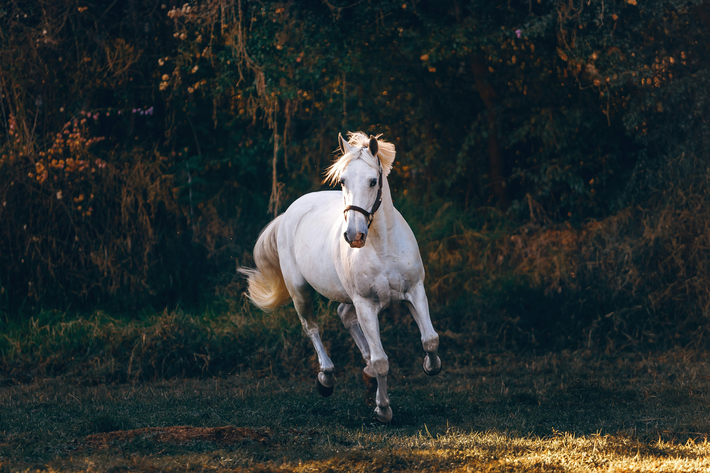

Conseils
Préparer son cheval pour l'hiver
Découvrez les meilleures pratiques pour maintenir la santé et le bien-être de votre cheval pendant la saison froide.
Lire l'articleUne approche holistique pour le bien-être de votre cheval, alliant techniques traditionnelles et méthodes modernes.

Praticienne certifiée en soins naturels équins et canins
Je suis praticienne en massages bien-être et soins naturels équins et canins certifiée, diplômée de l'École Nationale Vétérinaire d'Alfort (EnvA), obtention du DE Comportement du chien: application à la relation humain-chien.
Je possède également une formation en éthologie équine. De plus, je suis certifiée en premiers secours canins et ACACED.
Passionnée par le bien-être animal, j'ai développé un ensemble de compétences diversifiées pour offrir des soins adaptés et de qualité aux animaux, en tenant compte de leurs besoins spécifiques.
Diplôme vétérinaire + DE Comportement du chien
Formation spécialisée comportement équin
Certification urgences vétérinaires
Autorisation légale activités animaux
Mes services s'adressent aux chevaux de sport et de loisirs, aux chevaux de propriétaires, ainsi qu'aux chevaux à la retraite. Je prends également en charge les chiens de sport et de compagnie, y compris les vieux chiens qui nécessitent des soins adaptés à leur âge et à leurs conditions de santé.
Mon objectif est d'apporter confort et bien-être à chaque animal, en utilisant des techniques éprouvées et respectueuses de leur physiologie.
Sport, loisirs & retraite
Sport, compagnie & seniors
Techniques respectueuses
Des soins personnalisés pour chaque animal
Rétablissement de l'équilibre musculo-squelettique par des techniques manuelles douces
Détente musculaire et amélioration de la circulation sanguine
Soins naturels par les plantes médicinales pour une approche holistique
Rééquilibrage énergétique par la médecine traditionnelle chinoise
Évaluation globale de l'état de santé et du bien-être de votre cheval
Accompagnement spécialisé pour l'optimisation des performances
La satisfaction de nos clients et le bien-être de leurs chevaux
Grâce aux soins d'Equiora, mon cheval a retrouvé sa souplesse et sa joie de vivre. L'approche naturelle a fait des merveilles pour ses problèmes articulaires.

Un professionnel exceptionnel qui comprend vraiment les chevaux. Ses techniques d'ostéopathie ont permis à nos chevaux de retrouver leurs performances.

L'expertise et la douceur d'Equiora ont permis à ma jument de surmonter ses problèmes de dos. Je recommande vivement ses services !
Conseils et actualités pour le bien-être de votre cheval
Découvrez les meilleures pratiques pour maintenir la santé et le bien-être de votre cheval pendant la saison froide.
Lire l'article
Découvrez les signaux d'alarme qui indiquent qu'il est temps de consulter un ostéopathe équin pour le bien-être de votre cheval.
Lire l'articleApprenez à reconnaître les signes subtils qui indiquent que votre cheval souffre et nécessite une intervention professionnelle.
Lire l'article